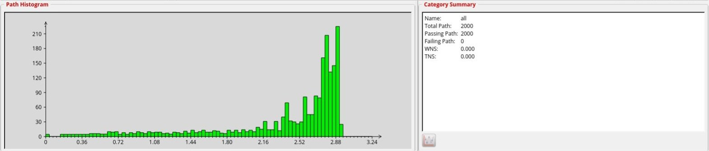
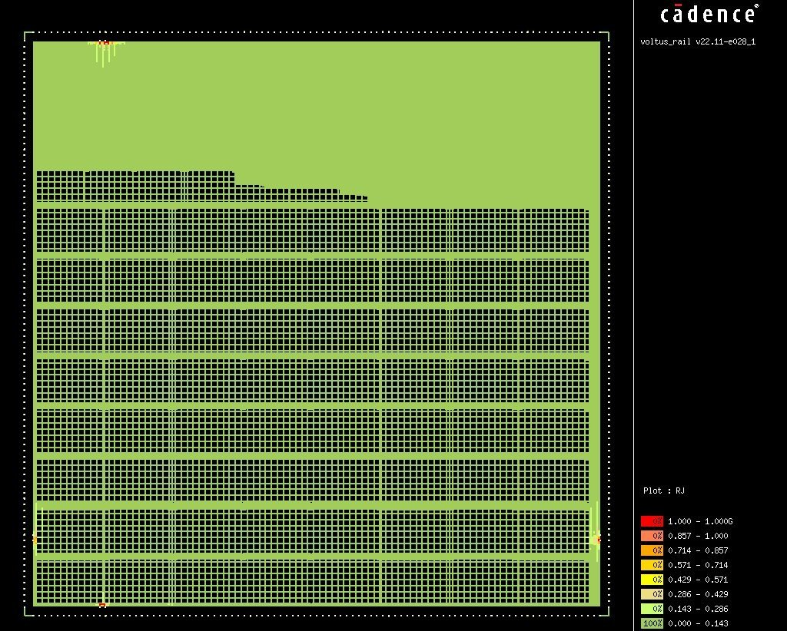
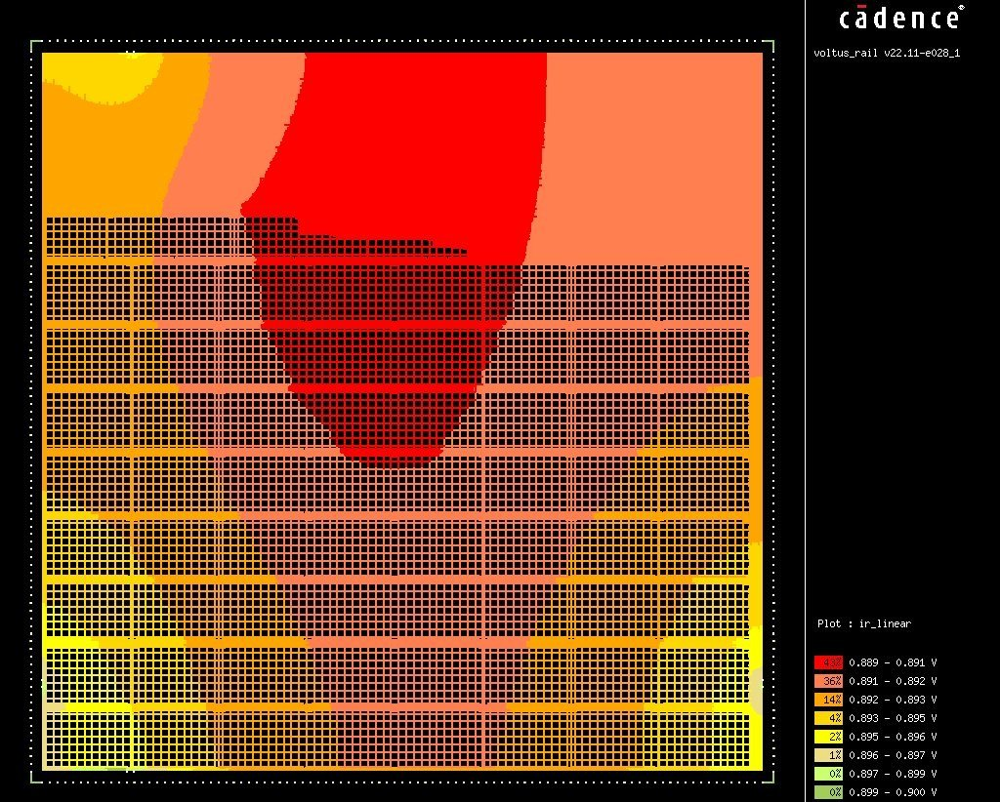
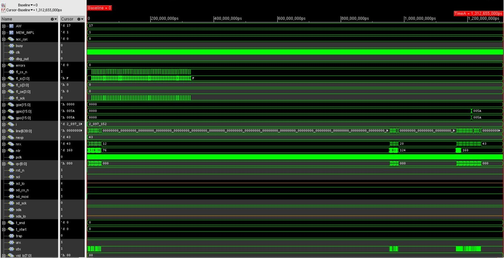
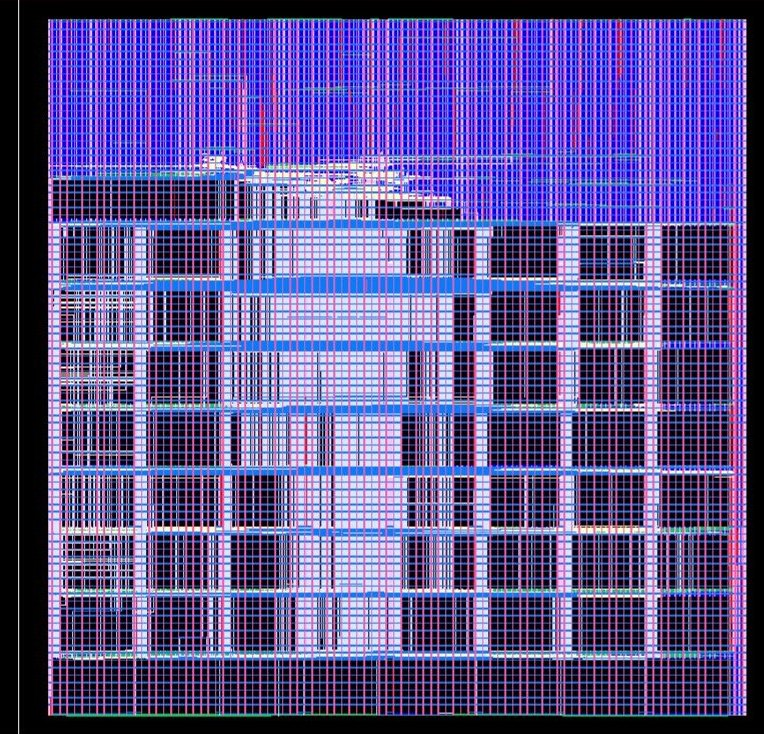

SQA V3 chip: complete AI SoC
The whole system on one die: RISC-V CPU, accelerator, 4 MB on-chip SRAM, peripherals and a 1080p display controller.
Screenshot proofs
The Innovus, Tempus, Virtuoso and IR-drop pictures come from the layout just before the EM fix (the fix only added power wires at the 8 supply pads); the 'after' EM map is the final layout.







Overview
V3 puts everything on one chip: the PicoRV32 RISC-V controller with its peripherals, the accelerator core, a 4 MB main SRAM built from 64 SRAM macros, and the 1080p display controller. The CPU runs C firmware that copies a network from QSPI flash into the on-chip SRAM, starts the accelerator and reports the result over UART. No SDRAM and no host link are needed: the board holds only V3 and a flash.
Because the data is on chip, V3 runs the test operator fastest of the three versions (60,589 cycles against 66,143 for V2). The 4 MB of SRAM makes it core-limited: 96 % of its macro area is the main memory.
This is an academic practice design on Cadence's generic GPDK045 45 nm PDK. It is fully signed off in the Cadence tools but it has not been fabricated. The SRAM macros are my own placeholder models (behaviour, estimated timing / area / power, outline and pins), because the generic PDK has no memory compiler.
The 64-tile 4 MB main SRAM and the other macros are explained in Memory design.
Headline numbers
Architecture
| Block | What it does |
|---|---|
| RISC-V controller subsystem | PicoRV32 (RV32IMC), 8 KB boot ROM, 128 KB SRAM (4 macros), Wishbone bus |
| Peripherals | UART, SPI SD card, I2C, 16 GPIO, timer, interrupt controller, QSPI flash with read cache |
| Accelerator core | the same core as V2 (Engines A / B / AUX, shared tables, weight-stream DMA, program fetch), reached through a register block |
| 4 MB main SRAM | 64 × 8192 × 64 SRAM macros behind an SDRAM-compatible adapter, so the core's memory port is unchanged |
| Engine / table macros | 6 SRAM macros as in V2 |
| Display controller | 1080p60 output with text overlay, pixel clock 148.5 MHz |
Key specifications
| Parameter | Value |
|---|---|
| Technology | GPDK045 (Cadence generic 45 nm PDK), gsclib045 standard cells, giolib045 I/O pads |
| Die size | 6.12 × 6.12 mm (core-limited by the 74 SRAM macros) |
| Pads | 80 = 64 signal + 16 power |
| Signal pins by interface | video 28, GPIO 16, QSPI flash 6, SPI SD 5, clocks + reset 3, UART 2, I2C 2, test 2 |
| Cells | 118,307 after synthesis; 149,935 instances after P&R |
| Synthesis area | 20.73 mm², of which the 4 MB main SRAM is 18.5 mm² |
| Memories inside | 74 SRAM macros: 64 × 8192×64 (4 MB main), 4 × 8192×32 (128 KB CPU), 6 engine / table macros |
| CPU | PicoRV32 RV32IMC (open source) with my own peripherals; firmware in C (RISC-V GCC) |
| Clocks | core 100 MHz, pixel 148.5 MHz |
| Supply / corners | 1.0 V nominal core library; signed off at 0.9 V / 125 C (slow, setup) and 1.1 V / 0 C (fast, hold) |
| Parts on the board | 2: V3 + flash |
| Test network run (synbk3, RTL) | 60,589 cycles (fastest of the three versions) |
Design flow
All steps use Cadence tools on a university server; HLS and firmware builds ran on a PC.
- RTL design: Verilog RTL; the neural-network engines were generated with Vitis HLS from C++ and checked bit-exact against a Python golden model.
- RTL simulation: Xcelium (and Vivado xsim on the PC) with my own board models: SDRAM, sync SRAM, QSPI flash, UART, SD card, I2C, display capture.
- Synthesis: Cadence Genus to the gsclib045 standard cells, 100 MHz core clock, slow corner.
- Place and route: Cadence Innovus: pad ring, floorplan, power grid, placement, clock-tree synthesis, routing, post-route optimisation.
- Physical verification: Cadence Pegasus DRC with the full GPDK045 rule deck, and Pegasus LVS (layout against netlist).
- Static timing: Cadence Tempus, SI-aware, with extracted parasitics: setup in the slow corner, hold in the fast and slow corners, plus every design-rule check type (slew, capacitance).
- Power and rail analysis: Cadence Voltus: power with real gate-level activity, static IR drop, electromigration (EM) and dynamic IR drop.
- Gate-level sign-off simulation: The routed netlist simulated again in Xcelium, with and without the routed delays (SDF back-annotation, all timing checks on).
Results
| Check | Result |
|---|---|
| Pegasus DRC (full GPDK045 deck) | clean except 61 accepted Metal4 width slivers where wires end on the placeholder (black-box) SRAM pins; 266 foundry-deck hits on the first run, all others fixed |
| Pegasus LVS | MATCH (67 pins, 391,600 nets) |
| Tempus sign-off timing (SI on) | setup WNS +0.006 ns, hold WNS +0.048 ns, TNS 0, 0 violators of every check type; 459 slew violators after the DRC rounds, repaired to 0 |
| Power (Voltus, real activity, slow corner) | 8.85 mW |
| Static IR drop (budget 45 mV) | VDD ~8 mV (0.892 V minimum), VSS 5.4 mV: 5x margin (before the EM fix ~11 / 8.5 mV) |
| Electromigration (Voltus) | PASS after the fix: 91 power-wire pieces were over the limit (worst 2.80x); after five ECO steps worst J / Jmax 0.764 (VDD), 0.756 (VSS), 0 over |
| Dynamic IR drop (budget 45 mV) | PASS: worst VDD drop ~26 mV, VSS bounce 22.4 mV (was ~29 / 26.3 mV before the EM fix) |
| Post-route gate-level simulation | PASS: C firmware boots from flash, runs the synbk3 operator on the accelerator and prints 43 / 43 UART bytes with the correct checksum |
| Gate-level simulation with routed delays (SDF) | PASS: 43 / 43 UART bytes, 0 errors; 100 % of path delays and 99.3 % of timing checks annotated |
Problems solved
Electromigration at the supply pads. The final candidate had 91 power-wire pieces over the EM limit (worst 2.80x) at all 8 supply pads. Three causes: each supply pad has two core-side pins but only one had been wired; the top-level Metal8 straps stopped at the core edge and never touched the ring, so the current climbed thin Metal4 stripes; at the side pads the nearest strap was 25-35 µm away. Fixed in five ECO steps: second pad wires, Metal8 stubs over the ring, Metal7 straps at the side pads, and missing Metal2-Metal8 vias (the stripe command does not drop vias on pad wires). Result: 0 pieces over the limit, and the static IR drop also fell from ~11 to ~8 mV.
A die-wide read path. Tempus found -0.159 ns on the main-SRAM read: bank select -> a 512-bit read mux across the 6 mm die -> output register, about 50 buffer stages, which Innovus had called +0.001 ns. A finishing run with a +0.25 ns setup target upsized the chain. Lesson for a real tapeout: pipeline wide read muxes instead of buffering across the die.
266 foundry DRC hits. Mostly tall via stacks. Rerouting around them only moved them; what worked was capping the few nets at that spot at Metal5 so no tall stack could form. 459 slew violators left by 18 reroute rounds were brought to 0 by DRV optimisation, targeted driver upsizing, and moving the last clock net to the low-resistance upper metals.